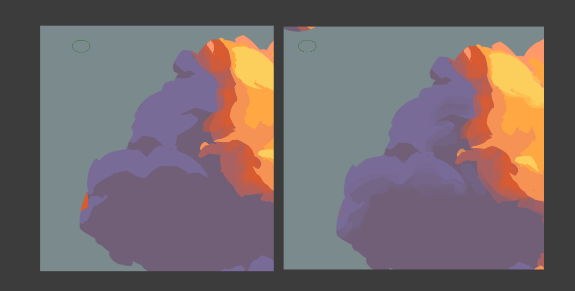

Krenz色彩 L4 作业笔记
L4 A01_1 节点一二
这里我没做笔记hhh。
关于节点一二，没啥好说的，节点一是做二分，节点二做部分细化——暗中暗，反光，透光。节点三是重头戏，是自我发挥最大的地方。
L4 A01_1 节点三
现在问题来了——我究竟以怎样的指导思想去做这后续的细化？我需要给自己定出一些规则来。
总之……
- 先大再小
- 先硬再软（这个如果和先整体再局部相悖，以先整体再局部为准）
- 这张图我其实有很强的先软再硬的冲动……我得把它压下来
- 先整体再局部
- 始终保持形状设计，形状一定要好看，除非是太过不显著的形状
同时，要给自己挑战——确保自己的每一个步骤都有明确意图，能用文字描述出来，让我始终觉察我在做什么，而非机械地乱涂。
我注意到，其实在很局部的地方，没必要做过渡——即使做硬边，远远地看上去还是软的，我的目标是整体上看上去如何，而非放大看上去如何。
那我的手段是，我先用硬笔去做，觉得如果用硬笔做，边缘就合适的话，就先这样，否则才上软笔。
软和硬其实是一种感觉，不是只有边缘才能塑造软硬。比如，加很多局部小形状会让画面更硬。
我注意到亮面很好做很容易出感觉，而暗面……我真tm日了狗了，什么jb东西。
其实我做的毫无感觉，但就那样过了，fine？
L4 A02 节点一
第一步是二分。我时而用空间思维，时而用形状思维——想象着这里如果加上一个云朵的形体，要用怎样的形状去表现它；发现这里的形状不好看，尝试去以平面的角度去修改它，然后回到空间的角度去检视它……
我意识到——我要让我做的每个形状都要有明确意图，要宁方勿圆，有趋势，要拉远了看能明确看到。如果不能做到这些点，那不如不做。
L4 A02 节点二
按照我之前的理解——在二分后续的细化中，同样要和二分遵循一样的思路——设计形状以体现形体和质感（但这个作业似乎也有通过形状去“找到”形体的意思因为并非是完全按原图的来），先做大块的，影响显著的形状，再做小块的，影响更微妙的形状，先在差异大的地方做文章（如明暗交界线，高光边缘），再在差异小的地方做文章。
我猜我可能做过头了——我在每一个形状上都在试图去体现云的质感，这让我倾向做出很碎的形状，我又犯错误啦！不要把云想象成那么小朵小朵的样子，看成大朵的，形状虽有随机性，但仍旧较为几何的……（这一句我实际上仍旧还是不确定的，因为我觉得无论是我的还是参考图的，都不太好看……
我操我发现我一直误解了lighten，darken的功能，我以为它是按最后亮度去变亮，变暗，实际操作下来发现，它是RGB通道分别取更小、更大的那个，我实际要的，是lighter color和darker color这俩。
L4 A02 节点三
节点二我的问题是我没有明确我想要表达的，参考图想要表达的形体……没有大问题。然后是节点三，
节点三我还是以上一张天鹅的思考方式去画——先大再小，先明显再细微，带着意图去设计形状。我不喜欢参考图的绘制顺序，怎么能这么画呢。
以及，要宁方勿圆——我觉得宁方勿圆可以说是意图的宁方勿圆——我有非常明确的意图去做什么事情——我明确地做硬边缘，我明确地把这里模糊掉。只要我的意图明确，即使我画圆的，软的东西，它看起来仍旧够“方”。
我注意到暗部一做软边缘，效果瞬间就出来了。

这次我要尝试不用半透明笔——我只用硬笔和软笔，我用新图层+软笔+橡皮去做过渡，用硬笔作形状，而不是像K大教的用半透明硬笔作形状，我不喜欢那种感觉，效率低而且画出来也并不能算好看（我觉着）。
其实硬笔用的很少了，在这后面，因为没有多少真正的硬边缘待我去做。
后面没啥要记的。我注意到，在边缘做一些虚化后，观感瞬间就上了一个台阶，虚实对比很有用啊。
L5 也做完了，没啥要记的……我怀疑 L6 也没啥要记的。
本博客所有文章除特别声明外，均采用 CC BY-NC-SA 4.0 协议 ，转载请注明出处！